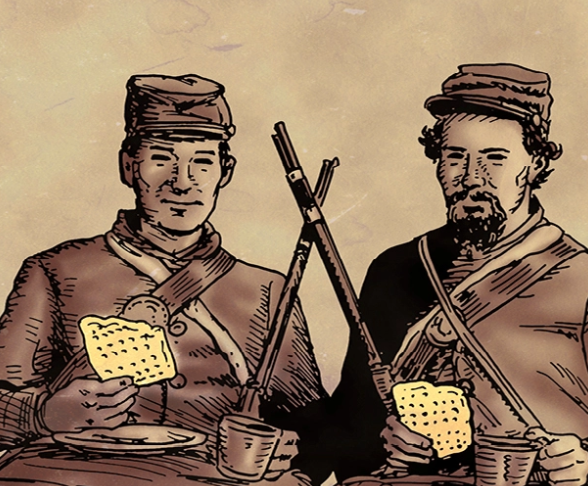
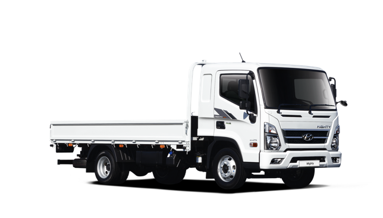
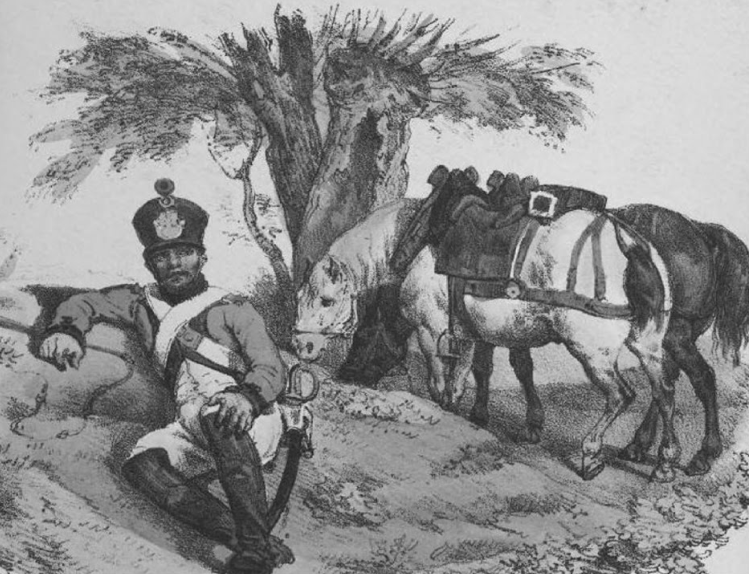
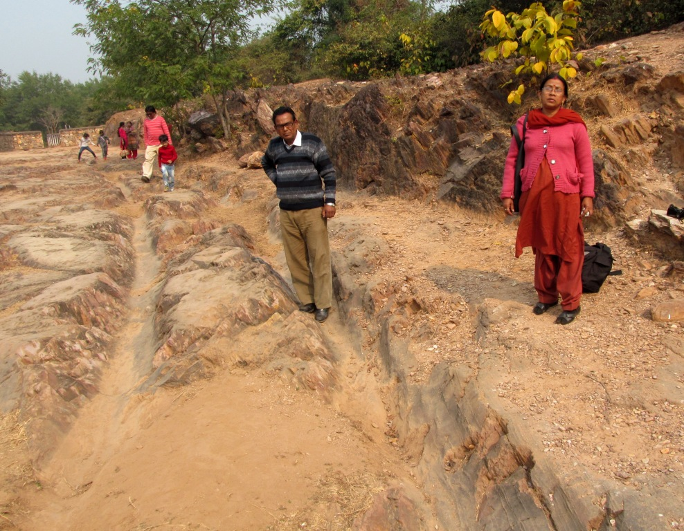

러시아 침공을 위한 병참 준비 - 무엇이 문제였을까 ? (2편)
게시: 2019-08-05T06:30:55+09:00
대체 이렇게 병참을 막대한 규모로 세심하게 준비했는데도 왜 나폴레옹의 러시아 원정은 보급을 등한시했기 때문에 망했다는 소리가 나오는 것일까요 ? 이것도 흔히 말하는 가짜 뉴스 때문에 나폴레옹이 억울한 누명을 뒤집어 쓴 것일까요 ? 일단 지난 편에서 보셨다시피 나폴레옹이 여태까지 해오던 것처럼 보급을 무시하다가 큰 코 다쳤다는 이야기는 억울한 누명이 맞습니다. 나폴레옹은 러시아 원정 준비에 있어서 무엇보다 보급에 정말 많은 준비를 했습니다. 그는 러시아 원정을 준비하면서 다부에게 이렇게 말한 바 있습니다.
"러시아에서는 아무것도 기대해서는 안 된다. 우리는 필요한 보급품을 모두 다 가져가야 한다."
그렇다면 혹시 보급품 쌓아놓을 생각만 했지 운송 수단에 대해서는 생각을 못한 것이 아니냐고요 ? 여러분도 생각하시는 것을 나폴레옹이 모를 리가 있겠습니까 ? 그는 의붓아들인 외젠에게 보내는 편지에서 이렇게 밝힌 바 있습니다.
"폴란드 전쟁(나폴레옹은 러시아 원정을 제2차 폴란드 전쟁'이라고 불렀습니다)은 오스트리아 전쟁과는 완전히 다르다. 운송 수단이 없다면 이 모든 것이 다 쓸모가 없어진다."
그런데 왜 망했냐고요 ? 결국은 기술의 문제였습니다. 나폴레옹이 단치히에 쌓아놓았다는 식량이 말을 위한 사료를 제외하고도 40만 대군이 50일간 먹을 분량이라고 했지요. 즉 2천만 명분의 식량을 비축해놓은 셈이었는데, 이게 과연 어느 정도의 분량이었을까요 ? 원래 원정 작전에 나선 병사들에게 제대로 보급이 안되는 것은 프랑스군 뿐만 아니라 보급이 잘 된다는 영국군에게조차 흔히 있는 일이었습니다. 그래도 1인분에 대해서 규정은 당연히 있었습니다. 프랑스군의 경우 원래 하루에 건빵 550g, 쌀 30g (또는 건조 채소 60g 여기서 건조 채소란 주로 콩류), 염장 고기 200g, 그리고 포도주 1/4리터 (또는 브랜디 1/6 리터)를 지급받게 되어있었습니다. 요즘 식당 기준으로 삼겹살 1인분이 200g 정도지만 실제로는 어느 누구의 배도 채우지 못해서 결국 1인분 더 시키는 경우가 많다는 것을 생각하면, 이건 결코 많은 양은 아닙니다. 요즘 식빵 1봉지가 대략 450g이니, 바싹 말린 건빵 550g이면 그걸로 배는 채울 수 있었을 것입니다. 여기에 포도주까지 생각하면 병사 한명이 먹이기 위해서는 대략 하루 1kg의 물자가 필요하다는 계산이 나옵니다. 즉, 단치히 항구에만 2만 톤의 건빵과 밀가루, 염장 고기 및 포도주가 보관되어 있었다는 뜻입니다.

(이건 미국 남북전쟁 병사들의 모습입니다만, 건빵, 그러니까 비스킷(biscuit)의 모양새나 맛은 비슷하지 않았을까 생각합니다. 비스킷을 먹으며 웃고 있는 병사들의 얼굴 표정이 비현실적이네요. 그림 출처는 https://www.artofmanliness.com/articles/how-to-make-civil-war-era-hardtack/ 입니다. 여기 보면 비스킷을 어떻게 굽는지 레시피가 나와있습니다.)
문제는 이걸 어떻게 수송하느냐인데, 러시아에 아우토반 같은 고속도로가 포장되어 있고 강력한 디젤 엔진을 갖춘 트럭들이 즐비하다면 별 문제가 안 될 수 있었습니다만, 당연히 당시엔 그러지 못했습니다. 실은 트럭과 고속도로가 있다고 해도 문제였을 것입니다. 그냥 단순 계산을 하면 2만 톤의 식량을 한꺼번에 수송하기 위해서는 현대자동차의 3.5톤 마이티 트럭이 5,714대 필요합니다. 이 트럭의 길이는 대략 6.7m인데 앞뒤 차간 거리를 1.3m씩 유지한 채로 움직인다고 해도 이 트럭들이 주욱 한 줄로 주욱 늘어서면 맨 앞차부터 맨 뒷차까지의 거리는 거의 46km에 달합니다. 당연히 이 트럭들을 위한 디젤 연료 보급도 생각해야 하고 또 당연히 있게 마련인 고장에 대비해서 수리 차량도 끌고 가야 합니다. 현대 기술로도 만만치 않은 일입니다. 더군다나 아스팔트 고속도로가 아니라 진흙구덩이 벌판을 가로질러야 하는 군대에게는 정말 현대 3.5톤 트럭이 있다고 해도 사실상 불가능한 일입니다.

(현대 마이티 3.5톤 트럭입니다. 디젤 엔진을 장착했습니다.)
기술이 없다면 물량으로 해결해야 하는데, 지난 편에 언급했듯이 나폴레옹은 여태까지와는 전혀 다른 대규모의 치중대를 편성하여 나름대로 최선의 노력을 다했습니다. 그는 총 20개 치중대대의 7,848대 마차(문헌에 따라서는 26개 대대 약 9,300대)를 편성했습니다. 당시 4마리의 말이 끄는 대형 마차의 경우 대략 1.36톤을 실을 수 있었습니다. 이 7~8천대의 마차가 모두 대형은 아니었지만 그냥 모두 4두 대형 마차라고 가정하고, 또 준비된 마차도 7,848대가 아니라 9,300대라고 가정하고 계산하면 이 치중대가 실어나를 수 있는 무게는 총 12,648톤에 이릅니다. 40만 대군이 50일 먹을 식량의 최소치인 2만톤에는 크게 미치지 못하지만, 그래도 대략 필요량의 60%에 달하는 막대한 수송량입니다. 게다가 아무리 러시아가 척박한 땅이라고 해도 거기도 사람 사는 곳이니 틀림없이 식량을 일부라도 현지 조달할 수 있었을 것입니다. 나폴레옹이 6월 24일에 네만 강을 건너 러시아 침공을 시작한 것에는 날씨에 대한 고려도 있었지만 러시아의 곡물 추수기가 대략 8월~10월이라는 것도 고려된 것입니다. 이 정도면 여전히 프랑스군 병사들은 배가 많이 고팠겠지만 그래도 굶주림으로 궤멸할 정도는 아니었을 것입니다. 그러나 이 계산에는 전혀 들어가지 않은 것이 있습니다. 바로 연료입니다. 위에서 언급한 현대 마이티 3.5톤 트럭의 경우 연료 탱크에 150리터의 경유가 들어가고, 연비는 (적재량에 따라 달라지겠지만) 빈 차인 경우 대략 7km/리터이니, 무거운 짐을 실은데다 가다 서다를 반복하는 조건이면 대략 4km/리터로 잡겠습니다. 그러니 프랑스군이 쾌속으로 하루 30km씩 진군한다고 하면 하루 8리터의 연료를 써야 합니다. 연료 탱크에 들어있는 연료만으로도 18일간 작전이 가능하고, 나폴레옹이 진격을 시작한지 83일 만에 모스크바에 입성했으니, 5번의 연료 보급를 더 받으면 됩니다. 이 5번의 보급을 위해서는 약 3560톤의 디젤유를 수송해야 하는데, 이를 위해서 트럭이 1,017대 더 필요합니다. 전체 트럭 5714대의 18%에 해당하는 오버헤드입니다. 생각보다 많기는 해도, 감당이 안 될 정도는 아닙니다. 그런데 디젤을 먹는 트럭 대신 풀과 곡물을 먹는 말의 경우로 계산해보면, 화석 연료의 강력함을 새삼 깨닫게 됩니다. 말은 하루에 대략 9kg의 사료를 먹어야 합니다. 9,300대의 마차에 딱 4마리씩 37,200마리의 말만 필요하다고 가정해보시지요. (현실적으로는 예비마가 있어야 하기 때문에 더 많은 수의 말이 필요합니다. 실제로 나폴레옹의 치중대에는 4두 마차 외에도 2두 마차가 꽤 있어서 전체 마차 수는 9,336대, 말은 약 32,500마리가 있었고 예비마가 6천마리 더 있었습니다.) 이 말들은 하루에 335톤의 사료를 먹어야 합니다. 83일 동안이라고 생각하면 27,788톤의 사료입니다. 잠깐만요. 이 마차들이 실어나를 보급품의 총량이 얼마라고 했지요 ? 예, 맞습니다. 12,648톤입니다. 그러니까 이 말들은 자신이 실어날라야 하는 무게의 2배가 훨씬 넘는 무게의 사료를 먹어야 합니다. 이건 도저히 견적이 나오지 않는 과제입니다. 게다가 기억하셔야 할 것이, 저 12,648톤의 보급품은 병사들이 필요로 하는 정량의 60%에 불과한 양입니다. 물론 이솝 우화에 나오는 이야기처럼, 식량이라는 짐은 사람이나 말이나 계속 먹어치우는 것이므로 여행을 가면 갈 수록 가벼워집니다. 그러나 현대적인 디젤 엔진으로는 비교적 간단히 해결되는 문제를 사료를 먹는 말로 해결하려 할 경우 도저히 감당이 안 된다는 것은 이해하실 수 있을 것입니다.
전에 인용했던 나폴레옹 전쟁을 배경으로 한 소설 Sharpe 시리즈 중의 한 장면을 읽어보시면 더욱 공감이 가실 겁니다.
Sharpe's Honour by Bernard Cornwell (배경: 1813년 스페인) ---------------
하지만 이 뜻하지 않게 사령부에서 도착한 텐트는 쓸데없는 문제거리를 만들어냈다. 대대 전체의 텐트를 움직이려면 노새가 5마리 필요했다. 노새 한마리는 200 파운드의 짐을 싣고, 거기에 추가로 자기가 먹을 6일치 사료 30 파운드를 더 실을 수 있었다. 작년 여름 작전처럼 행군을 한다면 사료가 부족해지니까 추가 사료를 싣기 위해 추가의 노새가 필요했는데, 그 추가된 노새도 먹어야 하니까 그 추가된 노새가 먹을 사료를 실어나를 노새가 또 필요했다. 샤프가 6주간의 행군을 한다면 900 파운드의 추가 사료가 필요했는데, 이 사료를 실은 노새만도 4~5 마리가 필요했고, 이 노새들이 6주간 먹을 사료만도 700 파운드가 필요했으므로 추가로 4마리의 노새가 필요했다. 이 추가된 4마리 노새도 또 사료를 먹어야 했으므로, 이 웃기지만 정확한 계산을 끝마치고나니 5마리의 텐트 수송용 노새를 6주간 먹여살리기 위해 추가로 14마리의 노새가 필요하다는 계산이 나왔다 !
----------------------------
"사람 나고 말 났지 말 나고 사람 났냐 ?"라며 말 사료는 대폭 줄이고 사람이 먹을 식량을 더 가져가면 되지 않겠냐고 생각들 하시겠지만, 그것도 정확한 이야기가 아닙니다. 인간은 생각보다 강한 짐승입니다. 인간 병사들은 먹을 것과 마실 것이 부족해도 쉽게 죽지 않고, 원래 걸어야 할 거리의 2배를 무리해서 행군해도 잘 버팁니다. 그러나 말은 먹이 부족과 과로에 견디지 못하고 픽픽 죽어 넘어집니다. 보통 전쟁에 나서는 인간은 지든 이기든 80% 이상이 살아 돌아오지만, 말은 60% 정도만이 살아 돌아왔습니다.
인간과는 달리 말은 그냥 들판에 널린 풀을 뜯어먹으면 되지 않을까 라고 생각하실 수 있습니다. 나폴레옹이 러시아의 겨울을 피해 훨씬 이른 시기인 봄에 작전을 시작하지 않은 이유 중 하나가 바로 그런 것이었습니다. 풀이 잘 자란 여름에 작전을 해야 말의 사료 문제 해결에 도움이 될 것이라는 생각에서였지요. 또 모든 기병대원에게는 말 먹이 풀을 벨 수 있도록 낫이 지급되기도 했습니다. 그러나 말은 원래 풀을 뜯어먹는 짐승이니 풀밭에 풀어놓으면 된다는 생각은 말이 하루종일 정말 풀만 뜯을 때나 통하는 것입니다. 하루 종일 강제로 걷게 하다가 길가의 풀을 약간 뜯게 하는 것은 사람으로 따지면 하루 종일 중노동 시킨 뒤에 얇은 식빵 2조각 던져주고 '사람은 원래 빵을 먹는 동물'이라고 주장하는 것과 동일한 일입니다. 그나마 수만 마리의 말이 통과하는 길이라면, 그 길가의 풀은 순식간에 씨가 마르게 됩니다. 실제로 나폴레옹이 네만 강을 건넌지 1달 만에 별다른 큰 전투도 없었는데 나폴레옹은 1만 마리의 말을 잃었습니다.

(프랑스 포병대 소속의 마부 병사와 말입니다. 병사도 불쌍하지만 말은 더 불쌍했습니다.)
게다가 그나마 도로 사정이 괜찮은 편이라는 독일과 이탈리아에서도 치중부대는 언제나 진흙탕이나 다름 없는 도로 사정 때문에 보병 부대를 따라잡는데 항상 애를 먹었습니다. 폴란드와 리투아니아, 그리고 러시아로 이어지는 광활한 동부 유럽은 사정이 훨씬 나빴습니다. 역사가 리엔(Richard K. Riehn)에 따르면 이런 수준이었답니다. "24일의 폭풍우는 폭우로 바뀌었다. 덕분에 길이라고 부르기도 민망한 리투아니아의 통행로는 바닥을 알 수 없는 진창으로 변해버렸다. 짐마차는 진창 속에 너무 깊게 빠져 바퀴 축이 땅에 닿을 정도였고, 말들은 지쳐 쓰러졌으며 병사들은 군화를 잃었다. 이렇게 퍼져버린 짐마차들로 인해 길이 막히자 병사들은 그 둘레를 빙 돌아가야 했고 보급품 마차와 포병대는 아예 멈춰설 수 밖에 없었다. 그러다 날이 개어 해가 나왔는데, 진흙구덩이 속의 바퀴자국들은 햇빛에 바싹 마르자 아주 단단한 계곡으로 변해버렸다. 이런 울퉁불퉁한 도로 때문에 말들의 다리가 부러졌고 짐마차들의 바퀴가 깨졌다."

(영어로는 이런 진창 길에 난 바퀴 자국은 rut이라고 하던데, 한자어에 나오는 '전철을 밟는다'라는 단어의 전철(前轍)이 바로 앞서 간 마차의 바퀴 자국을 뜻하는 것이지요. 왠지 130년 뒤에 나폴레옹의 전철을 밟았던 어떤 오스트리아 화가 지망생 생각이 나는 한자어네요.)
이런 진흙탕 도로 위에 1.36톤의 짐을 싣는 4두 마차를 끌고 가면 결과는 뻔했습니다. 나폴레옹도 좀더 가벼운 2두 마차를 더 많이 준비해야 한다는 것을 알고 있었습니다. 그러나 2두 마차의 수송량은 4두 마차의 절반이 아니라 그보다 크게 더 떨어졌습니다. 이렇게 두당 수송량이 떨어지면 그렇지않아도 답이 안 나오는 사료 문제는 더욱 답이 없어집니다. 그래서 나폴레옹도 이게 답은 아니라는 것을 알면서도 2두 마차 대신 4두 마차 위주로 마차를 준비할 수 밖에 없었습니다.
결국 나폴레옹이 유럽 전역의 말과 마차, 사료를 다 끌어모았다고 하더라도 치중부대가 나폴레옹의 배고픈 보병부대에게 건빵을 제때 전달할 수는 없었을 것입니다. 과연 나폴레옹은 어떻게 해야 했을까요 ?
Source : 1812 Napoleon's Fatal March on Moscow by Adam Zamoyski http://www.indiana.edu/~psource/PDF/Archive%20Articles/Spring2011/LynchBennettArticle.pdf https://pdfs.semanticscholar.org/1d6e/96fd09126a40dca06ef01e8c9b13785e8379.pdf https://warandsecurity.com/2013/02/11/why-napoleons-1812-russian-campaign-failed/ https://en.wikipedia.org/wiki/French_invasion_of_Russia https://www.stolenhistory.org/threads/1812-french-invasion-of-russia-vs-logistics.1167/ https://www.bbc.co.uk/news/magazine-16929522 Napoleon's Train Troops: 1800-1815. Paul Lindsay Dawson